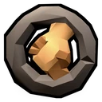

Agile
Agile is a champion: an ordinary enemy in the Endless Dungeon or Dark can arrive as a Agile one.
What it changes
Attacks 20% faster, but has 20% less health.
The game's advice: Its attacks come quickly, but it goes down quickly too.
Drops
| Item | Quantity | Rarity |
|---|---|---|
 Kamikaze Idol Kamikaze Idol | 1 | 1/10 |
 Scrap Scrap | 1–3 | 1/5 |
 Treasure Seal Treasure Seal | 1 | 1/20 |
 Clutch Idol | 1 | 1/250 |
 Sand Idol Sand Idol | 1 | 1/20 |
One fight in 33 is a champion at first, rising each round to 35%. The Champions guide has more.